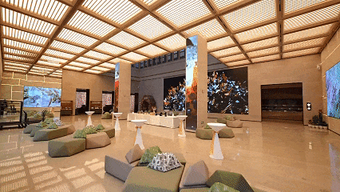
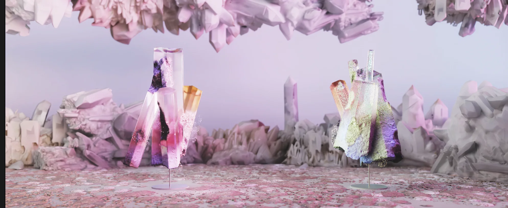
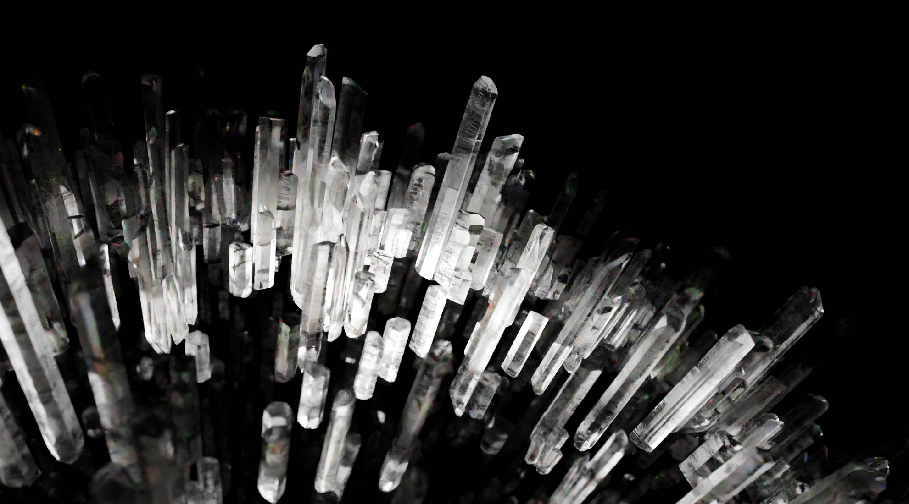
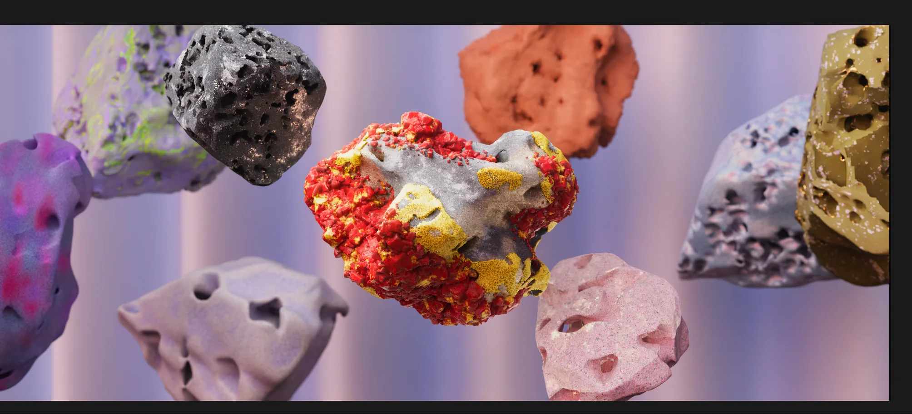
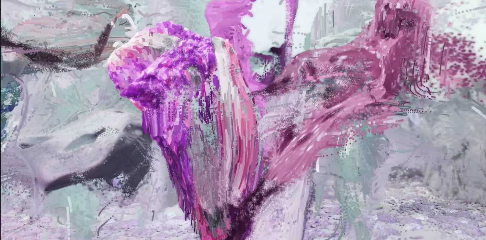
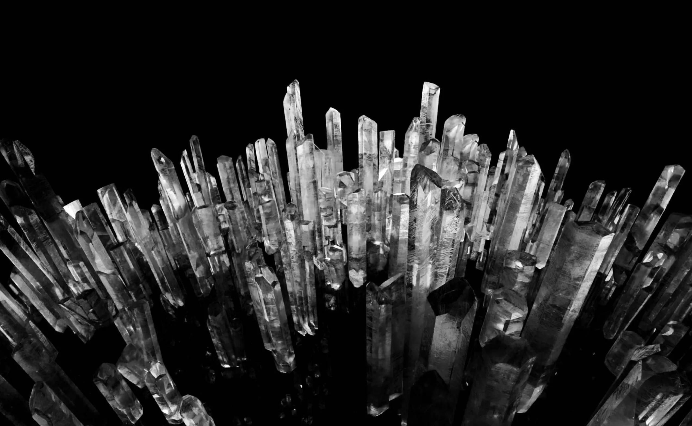
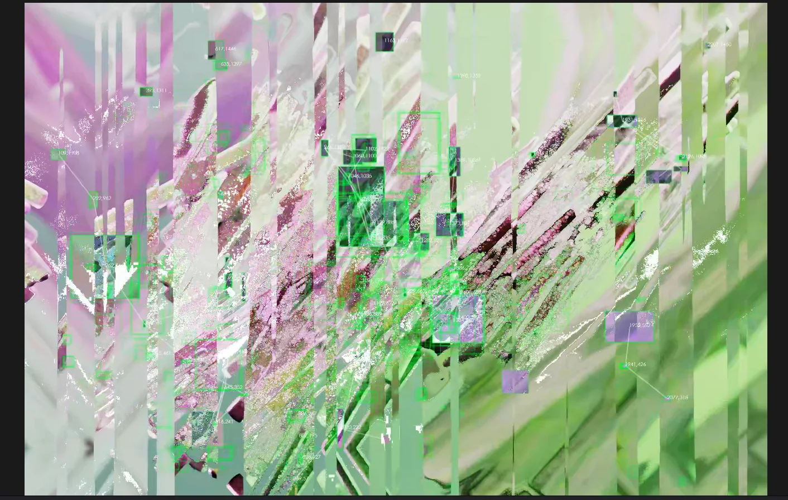

Overview / 项目简介
为酒店大堂与商业空间开发的矿物、晶体主题影像系统。内容在主屏、立柱屏和侧屏之间展开，把不同方向与比例的画布组织成连续的数字景观。
Content
矿物、晶体与自然形态的三维内容研发
Canvas
主屏、立柱屏与侧屏的多画布组织
Delivery
非标准屏幕适配、画面拆分与空间内容制作
Installed View / 空间现场
先交代真实空间，再进入矿晶内容细节。不同画面分别对应横向主屏、竖向立柱屏与侧屏。



Crystal Gallery / 矿晶图库
从黑底晶簇、彩色矿物到数据化破碎状态，展示同一内容体系在不同屏幕上的视觉变化。








Process / 过程
Many canvases. One landscape.
制作从横向主屏出发，再把材质、运动和镜头重新组织到竖向立柱与侧屏。重点不是复制同一段视频，而是在不同画幅之间保持连续的视觉节奏。
Credits / 项目署名
- Project / 项目
- 中国国家地理·矿晶空间影像
- Context / 场景
- 酒店大堂与商业空间长期影像内容
- VIRTURA Role / 职责
- 矿晶三维内容研发、多画布内容组织、非标准屏幕适配与影像制作
- Client + Production
- 正式委托、制作与供应商署名待项目物料确认后补全